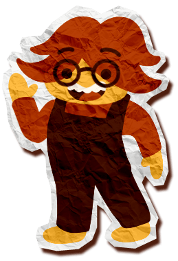

Welcome!
Hi there! My name is Paper Patches, but you can call me Patchy. Welcome to my little Workshop, where paper adventures are always unfolding.
It’s a little rough around the edges here, but that’s exactly how I like it. I create colourful paper collage illustrations that feel like they’re jumping right out of the page and into your hands. Each piece is carefully hand crafted with curiosity, and imagination. Come along with me and discover my Papertopia!
Every story begins with a spark. Whether your story is a tiny spot illustration or a full picture book, your ideas matter deeply to me. We’ll chat about your story, your goals, and your timeline. Tell me about your dreams for the project, and we’ll agree on a plan that’s personalised just for you.
Once we’re on the same page I’ll start sketching away! I’ll sketch and sketch all day! You can lean on my love of colour, composition, and storytelling while staying involved every step of the way. Once you’ve approved of my rough draft and direction, then it’s time for me to bring your final artwork to paper-life!
When you’re ready to bring your ideas to my Papertopia, then I’d love to hear from you. Click the button below and let’s start creating something wonderful together.